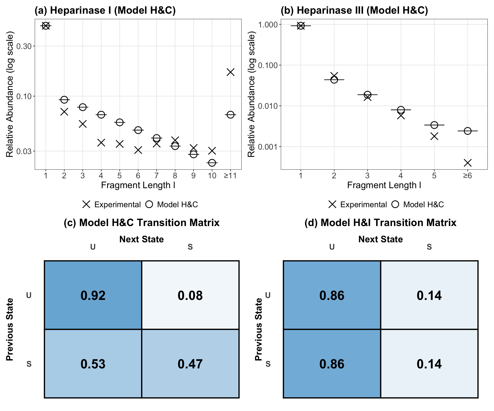
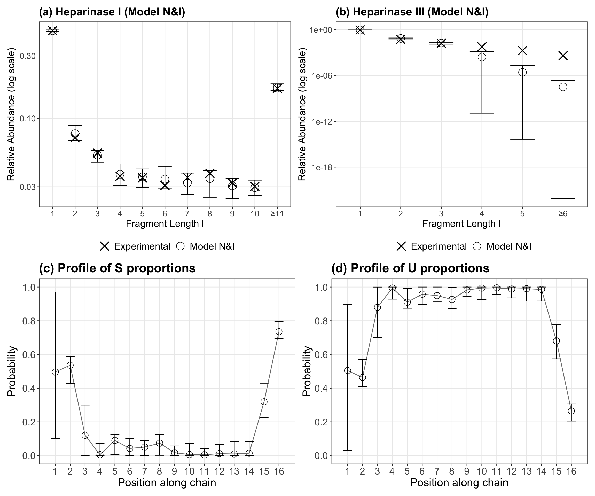
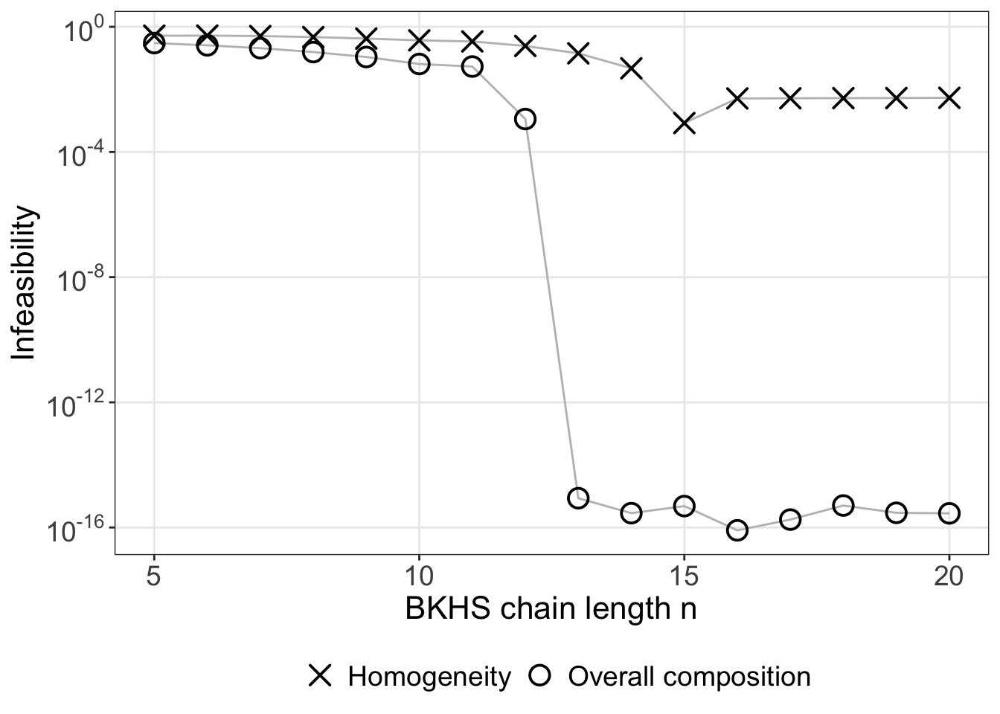
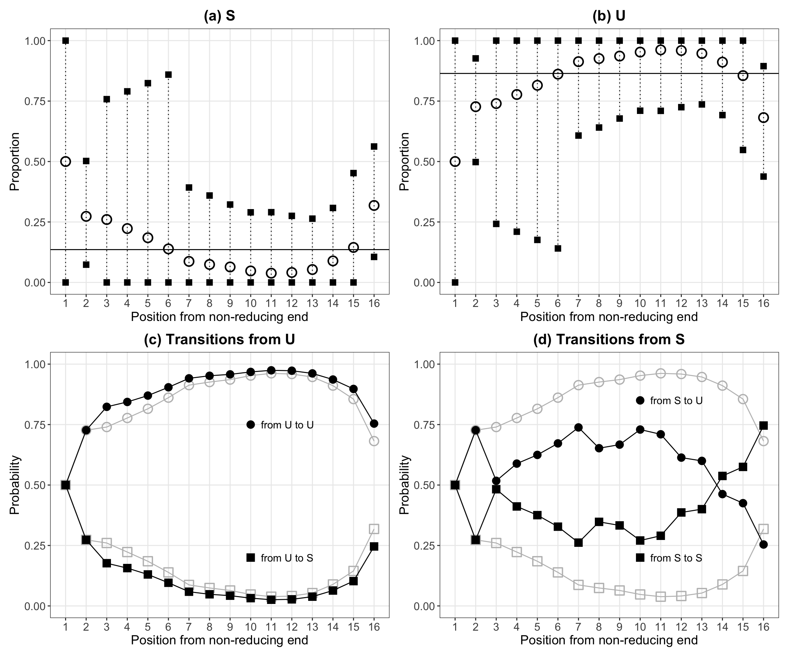
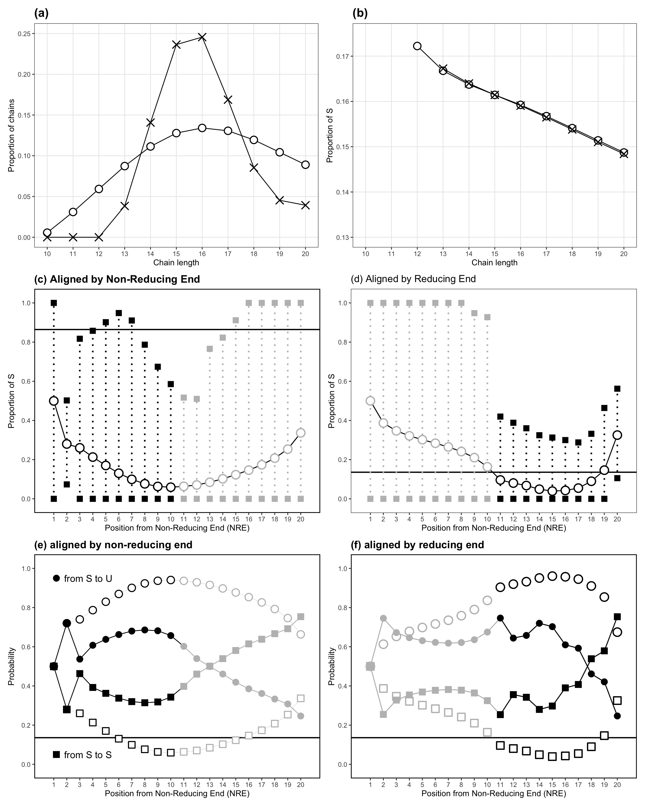

Examples of usage of the Java heparansulfate package
Joel R Pradines
2026-01-18
Introduction
The Java package heparansulfate is built with the code developed for
“Combining measurements to estimate properties and characterization extent of complex biochemical mixtures; applications to Heparan Sulfate”. J.R. Pradines, D. Beccati, M. Lech, J. Ozug, V. Farutin, Y. Huang, N.S. Gunay & I. Capila. Scientific Reports volume 6, Article number: 24829 (2016). [full text]
Examples of usage are provided by running via rJava the
code utilized to make the 6 figures of the publication. Figures are then
rendered with ggplot2.
library(ggplot2)
library(patchwork)
library(scales)library(rJava)
options(java.parameters = "-Xmx8000m")
jar_path <- normalizePath("../target/heparan-sulfate-1.0-SNAPSHOT-jar-with-dependencies.jar", mustWork = TRUE)
.jinit(classpath = jar_path)
#> [1] 0
input_dir <- paste0(normalizePath("../input/", mustWork = TRUE), "/")
output_base <- paste0(normalizePath("../output/", mustWork = TRUE), "/")Figure 1
# Data
out_dir_hi <- paste0(output_base, "HI/")
.jcall("heparansulfate.HIModel", "V", "hepI", input_dir, out_dir_hi)
.jcall("heparansulfate.HIModel", "V", "hepIII", input_dir, out_dir_hi)Figure 1. Distributions of fragment lengths \(l\) in heparinase digests (crosses) as compared to distributions expected under model H&I (dots). Relative abundances are summed for \(l ≥ 11\) (heparinase I, (a)) and for \(l ≥ 6\) (heparinase III, (b)).
# Plot
plot_figure1_panel <- function(exp_file, model_file, title, threshold, is_hepI = FALSE) {
df_exp <- read.table(exp_file, header = TRUE)
df_mod <- read.table(model_file, header = TRUE)
df_combined <- merge(df_exp, df_mod, by = "l")
all_vals <- c(df_combined$f, df_combined$h)
y_min <- min(all_vals[all_vals > 0]) # Avoid log(0)
y_max <- max(all_vals)
x_labels <- c(as.character(1:(threshold-1)), paste0("≥", threshold))
p <- ggplot(df_combined, aes(x = factor(l))) +
geom_point(aes(y = f, shape = "Experimental"), size = 5, stroke = 1) +
geom_point(aes(y = h, shape = "Model H&I"), size = 5, stroke = 1) +
scale_shape_manual(name = "", values = c("Experimental" = 4, "Model H&I" = 1)) +
scale_x_discrete(labels = x_labels) +
labs(title = title, x = "Fragment Length l", y = "Relative Abundance (log scale)") +
theme_bw() +
theme(
legend.position = "bottom",
panel.grid.minor = element_blank(),
axis.text = element_text(size = 1),
axis.title = element_text(size = 14),
plot.title = element_text(size = 16, face = "bold"),
legend.text = element_text(size = 12)
)
if (is_hepI) {
p <- p + scale_y_log10(
limits = c(0.02, 0.5),
breaks = c(0.05, 0.1, 0.2, 0.5),
labels = c("0.05", "0.1", "0.2", "0.5")
)
} else {
p <- p + scale_y_log10(
limits = c(y_min * 0.8, y_max * 1.2),
breaks = scales::log_breaks(n = 5)
)
}
return(p)
}
file_exp_hepI <- "../input/hepI.f.txt"
file_HIM_hepI <- "../output/HI/HIM.hepIhl.res"
file_exp_hepIII <- "../input/hepIII.f.txt"
file_HIM_hepIII <- "../output/HI/HIM.hepIIIhl.res"
p1 <- plot_figure1_panel(file_exp_hepI, file_HIM_hepI, "(a) Heparinase I", 11, is_hepI = TRUE)
p2 <- plot_figure1_panel(file_exp_hepIII, file_HIM_hepIII, "(b) Heparinase III", 6, is_hepI = FALSE)
p1 + p2
Figure 2
input_dir_abs <- paste0(normalizePath("../input/", mustWork = TRUE), "/")
output_dir_abs <- paste0(normalizePath("../output/HC/", mustWork = TRUE), "/")
java_args <- .jarray(c(input_dir_abs, output_dir_abs), "java/lang/String")
.jcall("heparansulfate.HCModelSA", "V", "main", java_args)Figure 2. Model H&C. Distributions of fragment lengths l in heparinases I (a) and III (b) digests (crosses) as compared to distributions expected under model H&C (dots). Modeling results are summarized for 100 runs of optimization with different initial conditions. Transition probabilities of homogeneous Markov models for H&C (c) and H&I (d).
# Plot
read_and_aggregate_hc_fit <- function(folder_path, pattern) {
files <- list.files(path = folder_path, pattern = pattern, full.names = TRUE)
if (length(files) == 0) {
warning(paste("No files found for pattern:", pattern))
return(data.frame(l=1:10, hmod_mean=runif(10,0.01,0.2), hmod_min=0, hmod_max=0.3, fexp=runif(10,0.01,0.2)))
}
data_list <- lapply(files, read.table, header = TRUE)
df_all <- do.call(rbind, data_list)
stats_agg <- aggregate(hmod ~ l, data = df_all, function(x) c(mean = mean(x), min = min(x), max = max(x)))
df_res <- data.frame(
l = stats_agg$l,
hmod_mean = stats_agg$hmod[, "mean"],
hmod_min = stats_agg$hmod[, "min"],
hmod_max = stats_agg$hmod[, "max"]
)
df_exp <- data_list[[1]][, c("l", "fexp")]
merge(df_res, df_exp, by = "l")
}
get_hc_matrix <- function(folder_path) {
files <- list.files(path = folder_path, pattern = "MM\\.s[0-9]+\\.P\\.res", full.names = TRUE)
if (length(files) > 0) {
tables <- lapply(files, function(f) {
d <- read.table(f, header = TRUE, col.names = c("prev", "nxt", "p"))
d$prev <- toupper(d$prev); d$nxt <- toupper(d$nxt)
return(d)
})
df_all <- do.call(rbind, tables)
df_agg <- aggregate(p ~ prev + nxt, data = df_all, mean)
get_p <- function(prev, nxt) {
val <- df_agg$p[df_agg$prev == prev & df_agg$nxt == nxt]
if (length(val) == 0) 0 else val
}
matrix(c(get_p("U","U"), get_p("U","S"), get_p("S","U"), get_p("S","S")), nrow=2, byrow=TRUE)
} else {
matrix(c(0.53, 0.47, 0.14, 0.86), nrow=2, byrow=TRUE)
}
}
get_hi_matrix <- function(file_path = "../input/US.ab.txt") {
if (file.exists(file_path)) {
df <- read.table(file_path, header = TRUE)
p_u <- df$rho[toupper(df$name) == "U"]; p_s <- df$rho[toupper(df$name) == "S"]
if (length(p_u) == 0) p_u <- 0; if (length(p_s) == 0) p_s <- 0
matrix(c(p_u, p_s, p_u, p_s), nrow=2, byrow=TRUE)
} else {
matrix(c(0.8642, 0.1358, 0.8642, 0.1358), nrow=2, byrow=TRUE)
}
}
plot_hc_fit_panel <- function(df, title, threshold) {
x_labs <- as.character(df$l)
if (max(df$l) == threshold) x_labs[length(x_labs)] <- paste0("≥", threshold)
ggplot(df, aes(x = factor(l))) +
geom_errorbar(aes(ymin = hmod_min, ymax = hmod_max), width = 0.6) +
geom_point(aes(y = fexp, shape = "Experimental"), size = 5, stroke = 1) +
geom_point(aes(y = hmod_mean, shape = "Model H&C"), size = 5, stroke = 1) +
scale_y_log10() +
scale_shape_manual(name = "", values = c("Experimental" = 4, "Model H&C" = 1)) +
scale_x_discrete(labels = x_labs) +
labs(title = title, x = "Fragment Length l", y = "Relative Abundance (log scale)") +
theme_bw() +
theme(
legend.position = "bottom",
legend.text = element_text(size = 14),
panel.grid.minor = element_blank(),
axis.text = element_text(size = 14),
axis.title = element_text(size = 16),
plot.title = element_text(size = 18, face = "bold")
)
}
plot_matrix_heatmap <- function(t_mat, title) {
df_mat <- data.frame(
Prev = rep(c("U", "S"), each = 2),
Next = rep(c("U", "S"), times = 2),
Prob = as.vector(t(t_mat))
)
df_mat$Prev <- factor(df_mat$Prev, levels = c("S", "U"))
df_mat$Next <- factor(df_mat$Next, levels = c("U", "S"))
ggplot(df_mat, aes(x = Next, y = Prev)) +
geom_tile(aes(fill = Prob), color = "black", size = 1) +
geom_text(aes(label = sprintf("%.2f", Prob)), size = 8, fontface = "bold") +
scale_fill_gradient(low = "white", high = "#6baed6", limits = c(0, 1)) +
scale_x_discrete(position = "top") +
labs(
title = title,
x = "Next State",
y = "Previous State",
fill = "Probability"
) +
theme_minimal() +
theme(
panel.grid = element_blank(),
legend.position = "none",
axis.text = element_text(size = 14, face = "bold"),
axis.title = element_text(size = 16, face = "bold"),
plot.title = element_text(size = 18, face = "bold", hjust = 0.5, margin = margin(b=10))
)
}
folder_hc <- "../output/HC/"
df_fit_hepI <- read_and_aggregate_hc_fit(folder_hc, "HC\\.s[0-9]+\\.hepI\\.fit\\.res")
df_fit_hepIII <- read_and_aggregate_hc_fit(folder_hc, "HC\\.s[0-9]+\\.hepIII\\.fit\\.res")
mat_hc <- get_hc_matrix(folder_hc)
mat_hi <- get_hi_matrix("../input/US.ab.txt")
p_a <- plot_hc_fit_panel(df_fit_hepI, "(a) Heparinase I (Model H&C)", 11)
p_b <- plot_hc_fit_panel(df_fit_hepIII, "(b) Heparinase III (Model H&C)", 6)
p_c <- plot_matrix_heatmap(mat_hc, "(c) Model H&C Transition Matrix")
p_d <- plot_matrix_heatmap(mat_hi, "(d) Model H&I Transition Matrix")
(p_a + p_b) / (p_c + p_d)
Figure 3
# Data
input_dir_abs <- paste0(normalizePath("../input/", mustWork = TRUE), "/")
output_dir_abs <- paste0(normalizePath("../output/NI/", mustWork = TRUE), "/")
java_args <- .jarray(c(input_dir_abs, output_dir_abs), "java/lang/String")
.jcall("heparansulfate.NIModelSA", "V", "main", java_args)Figure 3. Model N&I. Distributions of fragment length l in heparinases I (a) and III (b) digests (crosses) as compared to distributions expected under model N&I (dots). Optimized profiles of S (c) and U (d) proportions along chains. Modeling results are summarized for 100 runs of optimization with different initial conditions.
# Plot
read_ni_fit <- function(folder_path, pattern) {
files <- list.files(path = folder_path, pattern = pattern, full.names = TRUE)
if (length(files) == 0) {
warning(paste("No files found for pattern:", pattern))
return(data.frame(l=1:10, hmod_mean=runif(10,0.01,0.1), hmod_min=0, hmod_max=0.2, fexp=runif(10,0.01,0.1)))
}
data_list <- lapply(files, read.table, header = TRUE)
df_all <- do.call(rbind, data_list)
stats <- aggregate(hmod ~ l, data = df_all, function(x) c(mean = mean(x), min = min(x), max = max(x)))
df_res <- data.frame(
l = stats$l,
hmod_mean = stats$hmod[, "mean"],
hmod_min = stats$hmod[, "min"],
hmod_max = stats$hmod[, "max"]
)
df_exp <- data_list[[1]][, c("l", "fexp")]
merge(df_res, df_exp, by = "l")
}
read_ni_profiles <- function(folder_path) {
files <- list.files(path = folder_path, pattern = "PM\\.s[0-9]+\\.gamma\\.res", full.names = TRUE)
if (length(files) == 0) {
warning("No gamma.res files found.")
return(data.frame(position=1:16, s_mean=runif(16), s_min=0, s_max=1, u_mean=runif(16), u_min=0, u_max=1))
}
data_list <- lapply(files, read.table, header = TRUE)
df_all <- do.call(rbind, data_list)
stats_s <- aggregate(s ~ position, data = df_all, function(x) c(mean = mean(x), min = min(x), max = max(x)))
stats_u <- aggregate(u ~ position, data = df_all, function(x) c(mean = mean(x), min = min(x), max = max(x)))
data.frame(
position = stats_s$position,
s_mean = stats_s$s[, "mean"], s_min = stats_s$s[, "min"], s_max = stats_s$s[, "max"],
u_mean = stats_u$u[, "mean"], u_min = stats_u$u[, "min"], u_max = stats_u$u[, "max"]
)
}
plot_fit_panel <- function(df, title, threshold) {
x_labs <- as.character(df$l)
if (max(df$l) == threshold) x_labs[length(x_labs)] <- paste0("≥", threshold)
ggplot(df, aes(x = factor(l))) +
geom_errorbar(aes(ymin = hmod_min, ymax = hmod_max), width = 0.6) +
geom_point(aes(y = fexp, shape = "Experimental"), size = 5, stroke = 1) +
geom_point(aes(y = hmod_mean, shape = "Model N&I"), size = 5) +
scale_y_log10() +
scale_shape_manual(name = "", values = c("Experimental" = 4, "Model N&I" = 1)) +
scale_x_discrete(labels = x_labs) +
labs(title = title, x = "Fragment Length l", y = "Relative Abundance (log scale)") +
theme_bw() +
theme(legend.position = "bottom",
legend.text = element_text(size = 14),
panel.grid.minor = element_blank(),
axis.text = element_text(size = 12),
axis.title = element_text(size = 14),
plot.title = element_text(size = 16, face = "bold"))
}
plot_profile_panel <- function(df, variable, title) {
y_mean <- df[[paste0(variable, "_mean")]]
y_min <- df[[paste0(variable, "_min")]]
y_max <- df[[paste0(variable, "_max")]]
ggplot(df, aes(x = position)) +
geom_errorbar(aes(ymin = y_min, ymax = y_max), width = 0.6, color = "black") +
geom_line(aes(y = y_mean), color = "black", alpha = 0.6) +
geom_point(aes(y = y_mean), shape = 1, size = 4) +
scale_y_continuous(limits = c(0, 1), breaks = seq(0, 1, 0.2)) +
scale_x_continuous(breaks = df$position) +
labs(title = title, x = "Position along chain", y = "Probability") +
theme_bw() +
theme(panel.grid.minor = element_blank(),
legend.text = element_text(size = 14),
axis.text = element_text(size = 14),
axis.title = element_text(size = 16),
plot.title = element_text(size = 18, face = "bold"))
}
folder_ni <- "../output/NI/"
df_fit_hepI <- read_ni_fit(folder_ni, "PM\\.s[0-9]+\\.hepI\\.fit\\.res")
df_fit_hepIII <- read_ni_fit(folder_ni, "PM\\.s[0-9]+\\.hepIII\\.fit\\.res")
df_profiles <- read_ni_profiles(folder_ni)
p_a <- plot_fit_panel(df_fit_hepI, "(a) Heparinase I (Model N&I)", 11)
p_b <- plot_fit_panel(df_fit_hepIII, "(b) Heparinase III (Model N&I)", 6)
p_c <- plot_profile_panel(df_profiles, "s", "(c) Profile of S proportions")
p_d <- plot_profile_panel(df_profiles, "u", "(d) Profile of U proportions")
(p_a + p_b) / (p_c + p_d)
Figure 4
# Data
input_dir_abs <- paste0(normalizePath("../input/", mustWork = TRUE), "/")
output_dir_abs <- paste0(normalizePath("../output/LP/", mustWork = TRUE), "/")
java_args <- .jarray(c(input_dir_abs, output_dir_abs), "java/lang/String")
.jcall("heparansulfate.ProfileFeasibility", "V", "main", java_args)
.jcall("heparansulfate.HomogeneityFeasibility", "V", "main", java_args)
Figure 4. Infeasibility of constraint sets as a function of BKHS chain length n. Dots: constraints of heparinase digests and overall disaccharide composition. Crosses: constraints of heparinase digests and homogeneity.
# Plot
file_feas <- "../output/LP/Feasibility.res"
file_hom <- "../output/LP/HomogeneityFeasibility.res"
df_comp <- read.table(file_feas, header = TRUE, sep = "\t")
df_comp$Dataset <- "Overall composition"
df_hom <- read.table(file_hom, header = TRUE, sep = "\t")
df_hom$Dataset <- "Homogeneity"
df_all <- rbind(df_comp, df_hom)
ggplot(df_all, aes(x = n, y = infeasibility)) +
geom_line(aes(group = Dataset), color = "gray", size = 0.5) +
geom_point(aes(shape = Dataset), size = 4, stroke = 1) +
scale_y_log10(breaks = 10^seq(0, -16, by = -4),
labels = scales::trans_format("log10", scales::math_format(10^.x))) +
scale_shape_manual(name = "",
values = c("Overall composition" = 1, "Homogeneity" = 4)) +
labs(x = "BKHS chain length n", y = "Infeasibility") +
theme_bw() +
theme(
legend.position = "bottom",
legend.text = element_text(size = 14),
panel.grid.minor = element_blank(),
axis.text = element_text(size = 14),
axis.title = element_text(size = 16),
plot.title = element_text(size = 18, face = "bold")
)
Figure 5
# Data
input_dir_abs <- paste0(normalizePath("../input/", mustWork = TRUE), "/")
output_dir_abs <- paste0(normalizePath("../output/ME/", mustWork = TRUE), "/")
java_args <- .jarray(c(input_dir_abs, output_dir_abs), "java/lang/String")
.jcall("heparansulfate.MaxEntModel", "V", "main", java_args)
.jcall("heparansulfate.GradientWidth", "V", "main", java_args)Figure 5. (a,b) Maximum-entropy estimates of S and U composition along BKHS chains (circles) and lower and upper bounds at each position estimated via linear programming (squares). Horizontal lines display overall S and U proportions. (c,d) Profiles of transition probabilities between disaccharides along chains, as estimated with maximum-entropy modeling (black symbols) and compared to the profile of disaccharide composition along chains (white symbols).
# Plot
gamma_file <- "../output/ME/MEM.gamma.res"
pt_file <- "../output/ME/MEM.pt.res"
ab_file <- "../input/US.ab.txt"
gw_file <- "../output/ME/GradientWidth.res"
df_gamma <- read.table(gamma_file, header = TRUE, sep = "\t")
df_pt <- read.table(pt_file, header = TRUE, sep = "\t")
df_ab <- read.table(ab_file, header = TRUE, sep = "\t")
rho_S <- df_ab$rho[df_ab$name == "s" | df_ab$name == "S"]
rho_U <- df_ab$rho[df_ab$name == "u" | df_ab$name == "U"]
df_gw <- read.table(gw_file, header = TRUE, sep = "\t")
p_a <- ggplot() +
geom_hline(yintercept = rho_S, linetype = "solid", color = "black") +
geom_segment(data = df_gw, aes(x = pos, xend = pos, y = lowerS, yend = upperS),
linetype = "dotted", size = 0.5, color = "black") +
geom_point(data = df_gw, aes(x = pos, y = lowerS), shape = 15, size = 3, color = "black") +
geom_point(data = df_gw, aes(x = pos, y = upperS), shape = 15, size = 3, color = "black") +
geom_point(data = df_gamma, aes(x = pos, y = s), shape = 1, size = 4, stroke = 1.2, color = "black") +
scale_y_continuous(limits = c(0, 1)) +
scale_x_continuous(breaks = seq(1, max(df_gamma$pos), 1)) +
labs(title = "(a) S", x = "Position from non-reducing end", y = "Proportion") +
theme_bw() +
theme(plot.title = element_text(hjust = 0.5, face = "bold", size = 16),
axis.text = element_text(size = 12), axis.title = element_text(size = 14),
panel.grid.minor = element_blank())
p_b <- ggplot() +
geom_hline(yintercept = rho_U, linetype = "solid", color = "black") +
geom_segment(data = df_gw, aes(x = pos, xend = pos, y = lowerU, yend = upperU),
linetype = "dotted", size = 0.5, color = "black") +
geom_point(data = df_gw, aes(x = pos, y = lowerU), shape = 15, size = 3, color = "black") +
geom_point(data = df_gw, aes(x = pos, y = upperU), shape = 15, size = 3, color = "black") +
geom_point(data = df_gamma, aes(x = pos, y = u), shape = 1, size = 4, stroke = 1.2, color = "black") +
scale_y_continuous(limits = c(0, 1)) +
scale_x_continuous(breaks = seq(1, max(df_gamma$pos), 1)) +
labs(title = "(b) U", x = "Position from non-reducing end", y = "Proportion") +
theme_bw() +
theme(plot.title = element_text(hjust = 0.5, face = "bold", size = 16),
axis.text = element_text(size = 12), axis.title = element_text(size = 14),
panel.grid.minor = element_blank())
p_c <- ggplot() +
geom_line(data = df_gamma, aes(x = pos, y = s), color = "gray", size = 0.5) +
geom_point(data = df_gamma, aes(x = pos, y = s), shape = 0, size = 4, color = "gray", stroke = 1) +
geom_line(data = df_gamma, aes(x = pos, y = u), color = "gray", size = 0.5) +
geom_point(data = df_gamma, aes(x = pos, y = u), shape = 1, size = 4, color = "gray", stroke = 1) +
geom_line(data = df_pt, aes(x = pos, y = pus), color = "black", size = 0.5) +
geom_point(data = df_pt, aes(x = pos, y = pus), shape = 15, size = 4, color = "black") +
geom_line(data = df_pt, aes(x = pos, y = puu), color = "black", size = 0.5) +
geom_point(data = df_pt, aes(x = pos, y = puu), shape = 16, size = 4, color = "black") +
annotate("point", x = 10, y = 0.75, shape = 16, size = 4, color = "black") +
annotate("text", x = 10.5, y = 0.75, label = "from U to U", hjust = 0, size = 4) +
annotate("point", x = 10, y = 0.20, shape = 15, size = 4, color = "black") +
annotate("text", x = 10.5, y = 0.20, label = "from U to S", hjust = 0, size = 4) +
scale_y_continuous(limits = c(0, 1)) +
scale_x_continuous(breaks = seq(1, max(df_pt$pos), 1)) +
labs(title = "(c) Transitions from U", x = "Position from non-reducing end", y = "Probability") +
theme_bw() +
theme(plot.title = element_text(hjust = 0.5, face = "bold", size = 16),
axis.text = element_text(size = 12), axis.title = element_text(size = 14),
panel.grid.minor = element_blank())
p_d <- ggplot() +
geom_line(data = df_gamma, aes(x = pos, y = s), color = "gray", size = 0.5) +
geom_point(data = df_gamma, aes(x = pos, y = s), shape = 0, size = 4, color = "gray", stroke = 1) +
geom_line(data = df_gamma, aes(x = pos, y = u), color = "gray", size = 0.5) +
geom_point(data = df_gamma, aes(x = pos, y = u), shape = 1, size = 4, color = "gray", stroke = 1) +
geom_line(data = df_pt, aes(x = pos, y = pss), color = "black", size = 0.5) +
geom_point(data = df_pt, aes(x = pos, y = pss), shape = 15, size = 4, color = "black") +
geom_line(data = df_pt, aes(x = pos, y = psu), color = "black", size = 0.5) +
geom_point(data = df_pt, aes(x = pos, y = psu), shape = 16, size = 4, color = "black") +
annotate("point", x = 10, y = 0.85, shape = 16, size = 4, color = "black") +
annotate("text", x = 10.5, y = 0.85, label = "from S to U", hjust = 0, size = 4) +
annotate("point", x = 10, y = 0.20, shape = 15, size = 4, color = "black") +
annotate("text", x = 10.5, y = 0.20, label = "from S to S", hjust = 0, size = 4) +
scale_y_continuous(limits = c(0, 1)) +
scale_x_continuous(breaks = seq(1, max(df_pt$pos), 1)) +
labs(title = "(d) Transitions from S", x = "Position from non-reducing end", y = "Probability") +
theme_bw() +
theme(plot.title = element_text(hjust = 0.5, face = "bold", size = 16),
axis.text = element_text(size = 12), axis.title = element_text(size = 14),
panel.grid.minor = element_blank())
(p_a | p_b) / (p_c | p_d)
Figure 6
# Data, individual species abundances
input_dir_abs <- paste0(normalizePath("../input/", mustWork = TRUE), "/")
output_dir_abs <- paste0(normalizePath("../output/MEW/", mustWork = TRUE), "/")
.jcall("heparansulfate.MaxEntModelW", "V", "makeSig35Filtered", input_dir_abs, output_dir_abs)
.jcall("heparansulfate.MaxEntModelW", "V", "makeSig15Filtered", input_dir_abs, output_dir_abs)# Data, averages over individual species
input_dir_abs <- paste0(normalizePath("../input/", mustWork = TRUE), "/")
output_dir_abs <- paste0(normalizePath("../output/MEW/", mustWork = TRUE), "/")
.jcall("heparansulfate.MaxEntModelW", "V", "glAndRholAndProfExamplesFiltered", input_dir_abs, output_dir_abs)
# Data, LP bounds
.jcall("heparansulfate.GradientWidth", "V", "defaultMixSpec", input_dir_abs, output_dir_abs)
# Data, chain length distributions
output_path <- paste0(normalizePath("../output/MEW/", mustWork = TRUE), "/FullDistSig3.5.res")
.jcall("heparansulfate.MixSpecies", "V", "saveDistribution", as.integer(10), as.integer(20), 3.5, 16., output_path)
output_path <- paste0(normalizePath("../output/MEW/", mustWork = TRUE), "/FullDistSig1.5.res")
.jcall("heparansulfate.MixSpecies", "V", "saveDistribution", as.integer(10), as.integer(20), 1.5, 16., output_path)Figure 6. (a,b) Two models of BKHS chain length distributions (a) and resulting chain disaccharide composition as a function of their length under maximum-entropy modeling (b). (c-f) Estimations of nonhomogeneity and correlation profiles when BKHS is modeled as a mixture of chain lengths (\(10 ≤ n ≤ 20, \sigma = 3.5)\). Chains are either aligned by their non-reducing end (c,e) or their reducing end (d,f). (c,d) maximum-entropy composition profile (circles), bounds at each position (squares) and overall composition (horizontal line). (e,f) transition probabilities from S to S or U (black) compared to probabilities under independence (white).
